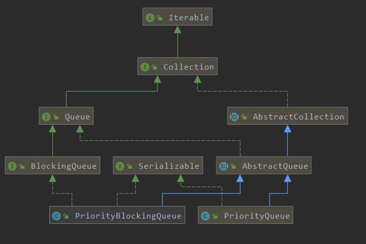
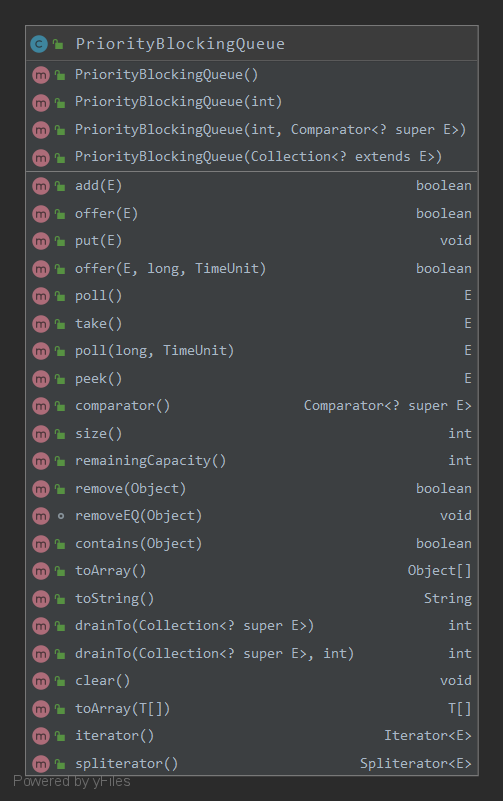

研究了PriorityQueue原理，知道JDK源码怎么实现的优先队列，这次是要搞清PriorityBlockingQueue阻塞优先队列是如何实现的；
本文从PriorityBlockingQueue的概念，结构，参数，源码解析（offer,poll,remove,add,grow），性能，线程安全性，使用场景，常见问题8个方面进行分析。
关键点：与PriorityQueue一样的排序规则，无界队列，实现Queue,Collection,Iterator接口、不允许null键/值、提供阻塞操作、线程安全、不保证队列内元素的顺序；
概念
An unbounded BlockingQueue blocking queue that uses the same ordering rules as class PriorityQueue and supplies blocking retrieval operations.
- While this queue is logically unbounded, attempted additions may fail due to resource exhaustion (causing OutOfMemoryError).
- This class does not permit null elements.
- A priority queue relying on
Comparable natural orderingalso does not permit insertion ofnon-comparableobjects (doing so results in ClassCastException). - This class and its iterator implement all of the optional methods of the Collection and Iterator interfaces.
- The Iterator provided in method iterator() is
not guaranteedto traverse the elements of the PriorityBlockingQueue in any particularorder. If you need ordered traversal, consider usingArrays.sort(pq.toArray()). Also, method drainTo can be used to remove some or all elements in priority order and place them in another collection. - Operations on this class make
no guaranteesabout theorderingof elements withequal priority.
If you need to enforce an ordering, you can define custom classes or comparators that use a secondary key to break ties in primary priority values.
For example, here is a class that applies first-in-first-out tie-breaking to comparable elements. To use it, you would insert a new FIFOEntry(anEntry) instead of a plain entry object.
1 | class FIFOEntry<E extends Comparable<? super E>> implements Comparable<FIFOEntry<E>> { |
- This class is a member of the Java Collections Framework
结构
基于二叉堆实现，参考JDK-PriorityQueue原理
PriorityQueue的类关系

PriorityQueue的类成员

参数
int.initialCapacity：初始化容量，默认为11；Comparator.comparator:用于队列中元素排序；int.size:记录队列中元素个数；ReentrantLock.lock:用于所有public方法操作的加锁；Condition.notEmpty:用于阻塞对空队列的操作；int.allocationSpinLock: 队列扩容时用于CAS；PriorityQueue.queue：用PriorityQueue进行序列化和反序列化；- 构造函数：新建1个空的队列；
1 | public PriorityBlockingQueue(int initialCapacity,Comparator<? super E> comparator) { |
源码解析
- The implementation uses an
array-based binary heap, with public operations protected with asingle lock.- However, allocation during resizing uses a simple
spinlock(used only while not holding main lock) in order to allow takes to operate concurrently with allocation.
This avoids repeated postponement of waiting consumers and consequent element build-up.- The need to back away from lock during allocation makes it impossible to simply wrap delegated
java.util.PriorityQueueoperations within a lock, as was done in a previous version of this class.- To maintain interoperability, a plain PriorityQueue is still used during serialization, which maintains compatibility at the expense of transiently doubling overhead.
heapify
参考PriorityQueue
从最后一个父节点开始siftdown，直到根节点
add/put/offer
1 | /** |
siftUp参考JDK-PriorityQueue原理
tryGrow扩容要点
- lock是全局锁，如果在扩容时加锁会导致其他线程出队时会阻塞；
- 而队列很大时，扩容操作（arraycopy）是比较费时的，如果此时占用锁，那么其他线程在这个时候是不能进行出队操作，这样会
降低并发处理能力； - 所以为了更好的性能，扩容时先释放锁；
- 但是释放锁后，会导致多个线程同时进行扩容，此时用spinLock以
CAS控制只有1个线程可以执行扩容，其他CAS失败的则跳过（newArray=null）； - CAS失败的线程调用
Thread.yield()让出CPU时间，目的是让让CAS成功的线程扩容后优先调用lock.lock重新获取锁，但是这得不到一定的保证，有可能调用Thread.yield()的线程先获取了锁； - 在扩容时，若其他线程在执行了出队操作，直接cop扩容会导致copy的不是最新的数据，所以此时要加锁后再copy；
- 在加锁时，如果其他线程执行出了/如队操作，队列发生了变化（queue != array），当前扩容操作要取消；如果成功加锁且队列没发生改变，则可执行扩容操作；
关键点：解全局锁，CAS乐观锁申请数组大小，扩容前恢复加锁
1 | /** |
take/poll
take阻塞出队
2
3
4
5
6
7
8
9
10
11
12
13
14
15
16
17
18
public E take() throws InterruptedException {
final ReentrantLock lock = this.lock;
//上锁，可中断
lock.lockInterruptibly();
E result;
try {
//阻塞直到队列返回结果
while ((result = dequeue()) == null) {
//阻塞等待恢复信号
notEmpty.await();
}
} finally {
//解锁
lock.unlock();
}
return result;
}poll阻塞出队（设置超时时间）
2
3
4
5
6
7
8
9
10
11
12
13
14
15
16
17
public E poll(long timeout, TimeUnit unit) throws InterruptedException {
long nanos = unit.toNanos(timeout);
final ReentrantLock lock = this.lock;
lock.lockInterruptibly();
E result;
try {
//阻塞直到队列返回结果，或者等待超时
while ((result = dequeue()) == null && nanos > 0) {
//阻塞等待恢复信号（超时时间）
nanos = notEmpty.awaitNanos(nanos);
}
} finally {
lock.unlock();
}
return result;
}
dequeue出队操作
2
3
4
5
6
7
8
9
10
11
12
13
14
15
16
17
18
19
20
21
22
23
24
25
26
27
28
29
30
31
32
33
34
35
36
37
38
39
40
41
42
43
44
45
46
47
48
49
50
51
52
53
54
55
56
57
58
59
60
61
62
63
64
65
66
* Mechanics for poll(). Call only while holding lock.
*/
private E dequeue() {
int n = size - 1;
//没元素返回空
if (n < 0) {
return null;
} else {
//拿出队头元素，用于返回
Object[] array = queue;
E result = (E) array[0];
//将队尾元素放到队头，并从队头开始执行siftDown
E x = (E) array[n];
array[n] = null;
Comparator<? super E> cmp = comparator;
if (cmp == null) {
siftDownComparable(0, x, array, n);
} else {
siftDownUsingComparator(0, x, array, n, cmp);
}
size = n;
return result;
}
}
/**
* Inserts item x at position k, maintaining heap invariant by demoting x down the tree repeatedly
* until it is less than or equal to its children or is a leaf.
*
* @param k the position to fill
* @param x the item to insert
* @param array the heap array
* @param n heap size
*/
private static <T> void siftDownComparable(int k, T x, Object[] array, int n) {
if (n > 0) {
//拿出父节点值
Comparable<? super T> key = (Comparable<? super T>) x;
//存在叶子节点时 loop while a non-leaf
int half = n >>> 1;
while (k < half) {
// assume left child is least
int child = (k << 1) + 1;
//最小值
Object c = array[child];
int right = child + 1;
//存在right且right比left大
if (right < n &&
((Comparable<? super T>) c).compareTo((T) array[right]) > 0) {
c = array[child = right];
}
//父节点比最小值小，不需要交换，终止loop
if (key.compareTo((T) c) <= 0) {
break;
}
//父节点值以最小值替换
array[k] = c;
//父节点移到最小值位置
k = child;
}
//父节点值，最终赋给交换n轮后的叶子节点
array[k] = key;
}
}关于ReentrantLock.lockInterruptibly
- 获取并持有锁直到当前线程未被中断。
- 获取该锁并立即返回（如果该锁没有被另一个线程持有），将锁的保持计数设置为 1。
- 如果该锁已被另一个线程持有，则当前线程不可被调度（即阻塞状态，CPU不会给该线程分配时间片）直到
- 当前线程获取到该锁；
- 其他线程中断当前线程；
- 如果该锁被当前线程持有，则将锁的持有计数设置为1，
- 如果当前线程在进入此方法时已经设置了该线程的中断状态；或者在等待获取锁的同时被中断。则抛出
InterruptedException异常，同时清除当前线程的中断状态；
- 在此实现中，因为
lockInterruptibly方法是一个显式中断点，所以要优先响应中断，而不是响应锁的普通获取或重入获取；注意程序要响应中断还是比较expensive的，有时候甚至imposibble，所以如果线程支持中断，一定要声明清楚！
jdk8-lock-lockInterruptibly
关于Condition.await
await方法的调用将导致当前线程等待直到signalled或interrupted调用时才恢复；
condition关联的lock会被原子释放，当前线程将不可调度直到以下4种情况触发：
- 其他线程调用当前condition的signal()方法，并且当前线程正好被唤醒；
- 其他线程调用当前condition的signalAll()方法；
- 其他线程终止当前线程， and interruption of thread suspension is supported;
spurious wakeup发生；
在所有情况中，在当前method能返回前，当前线程必须重新获取condition关联的锁；
在线程返回时await会保证一直持有condition关联的锁；
remove
加锁后，删除节点1
2
3
4
5
6
7
8
9
10
11
12
13
14
15
16
17
18
19
20
21
22
23
24
25
26
27
28
29
30
31
32
33
34
35
36
37
38
39
40
41
42
43
public boolean remove(Object o) {
final ReentrantLock lock = this.lock;
lock.lock();
try {
int i = indexOf(o);
if (i == -1) {
return false;
}
removeAt(i);
return true;
} finally {
lock.unlock();
}
}
private void removeAt(int i) {
Object[] array = queue;
int n = size - 1;
// removed last element
if (n == i) {
array[i] = null;
} else {
E moved = (E) array[n];
array[n] = null;
Comparator<? super E> cmp = comparator;
if (cmp == null) {
//从删除节点开始下沉
siftDownComparable(i, moved, array, n);
} else {
siftDownUsingComparator(i, moved, array, n, cmp);
}
//siftDown后，若元素没有改变，可能是因为要删除的结点和堆尾结点是跨子树，或者要删除的结点是叶子结点
if (array[i] == moved) {
if (cmp == null) {
siftUpComparable(i, moved, array);
} else {
siftUpUsingComparator(i, moved, array, cmp);
}
}
}
size = n;
}
从当前节点上浮到根节点
2
3
4
5
6
7
8
9
10
11
12
13
Comparable<? super T> key = (Comparable<? super T>) x;
while (k > 0) {
int parent = (k - 1) >>> 1;
Object e = array[parent];
if (key.compareTo((T) e) >= 0) {
break;
}
array[k] = e;
k = parent;
}
array[k] = key;
}peek
加锁后，返回堆顶节点
2
3
4
5
6
7
8
9
10
public E peek() {
final ReentrantLock lock = this.lock;
lock.lock();
try {
return (size == 0) ? null : (E) queue[0];
} finally {
lock.unlock();
}
}size
加锁后，返回堆大小
2
3
4
5
6
7
8
9
10
public int size() {
final ReentrantLock lock = this.lock;
lock.lock();
try {
return size;
} finally {
lock.unlock();
}
}contains
加锁后，返回堆大小
2
3
4
5
6
7
8
9
10
11
12
13
14
15
16
17
18
19
20
21
22
23
public boolean contains(Object o) {
final ReentrantLock lock = this.lock;
lock.lock();
try {
return indexOf(o) != -1;
} finally {
lock.unlock();
}
}
private int indexOf(Object o) {
if (o != null) {
Object[] array = queue;
int n = size;
for (int i = 0; i < n; i++) {
if (o.equals(array[i])) {
return i;
}
}
}
return -1;
}性能
- O(1)：peek
- O(n)：heapify
- O(nlog(n)):put,remove
线程安全性
PriorityBlockingQueue中的锁
ReentrantLock：重入锁，对queue的所有public操作加锁；Condition：竞态条件，如果队列为空，take/poll时await阻塞，offer时signal取消阻塞；Unsafe：扩容时，以compareAndSwapInt执行CAS操作
关于UnSafe
Unsafe是位于sun.misc包下的一个类，主要提供一些用于执行低级别、不安全操作的方法，如直接访问系统内存资源、自主管理内存资源等，这些方法在提升Java运行效率、增强Java语言底层资源操作能力方面起到了很大的作用。- 由于Unsafe类使Java语言拥有了类似C语言指针一样操作内存空间的能力，这无疑也增加了程序发生相关指针问题的风险。在程序中过度、不正确使用Unsafe类会使得程序出错的概率变大，使得Java这种安全的语言变得不再“安全”，因此对Unsafe的使用一定要慎重。
关于CAS
- 什么是CAS? 即比较并替换，实现并发算法时常用到的一种技术。CAS操作包含三个操作数——内存位置、预期原值及新值。
- 执行CAS操作的时候，将内存位置的值与预期原值比较，如果相匹配，那么处理器会自动将该位置值更新为新值，否则，处理器不做任何操作。我们都知道，CAS是一条CPU的原子指令（
cmpxchg指令），不会造成所谓的数据不一致问题，Unsafe提供的CAS方法（如compareAndSwapXXX）底层实现即为CPU指令cmpxchg。- CAS在
java.util.concurrent.atomic相关类、Java AQS、CurrentHashMap等实现上有非常广泛的应用。
锁的定义
1 | /** |
使用场景
常见问题
PriorityBlockingQueue中用到了那些锁？
- CAS
- ReentranLock
PriorityBlockingQueue中的Blocking体现在哪些操作？
- read：take
- write：grow，offer